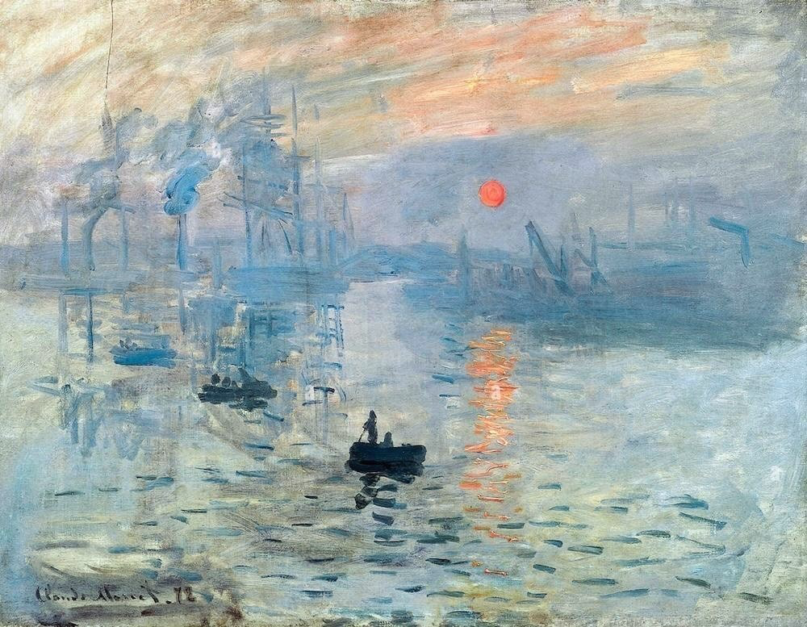

Claude Monet, “Impression, Sunrise”
Claude Monet's "Impression, Sunrise" (1872) is a seminal work that gave the Impressionist movement its name. The painting captures the port of Le Havre at sunrise, with soft brushstrokes and a focus on light and atmosphere rather than detail. The hazy, almost abstract quality of the scene emphasizes the fleeting nature of the moment, showcasing Monet's innovative approach to color and form.